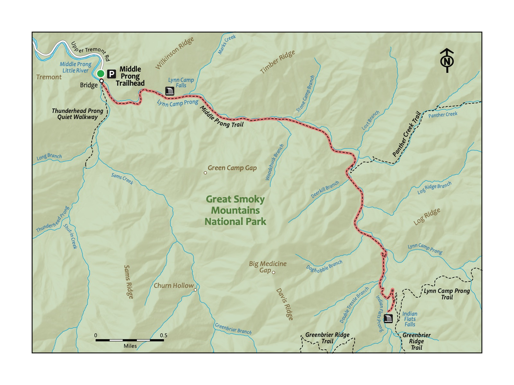

Trail 24: Middle Prong
Overview
This hike is great for families looking to have an authentic hiking experience deep in the Smokies while still being only a little over an hour’s drive from Knoxville. A benefit of this hike is its distance–only 0.6 miles to the waterfall, but along a stream that affords many chances to hop in and splash. The turn-around spot is an overlook to a waterfall, Lynn Camp Prong, though the trail continues after the cascades up to another waterfall, Indian Flats Falls. Given the ample shade and easy access to the stream, this is a great hike for the summer, but it is enjoyable in all seasons. Good for kids of all ages because you can turn around at any point.

Key Characteristics
| Characteristic | Details |
|---|---|
| Time Estimate | 4 hours - 6 hours |
| Trail Distance (Miles) | 7.6 |
| Elevation Change | Moderate |
| Pets | Not Allowed |
| Parking Pass/Entrance Fee | Required |
| Restroom(s) | No |
| Best Ages | All Ages |
| Strollers and Wheelchairs | Not accessible |

Directions to the Trailhead
Trailhead Address: Middle Prong Trail Trailhead, J89J+54 Townsend, Tennessee
Trailhead GPS Coordinates: 35.61794, -83.66971
The above address will navigate you to the parking area for the trailhead. Please note it uses a “Plus code” in lieu of a stree address that only works in Google Maps. Note that this trailhead is at the end of a lengthy gravel road, but it’s fairly smooth (and it’s a pretty drive). This is a large parking area. Even on the busiest days, you will be able to find a place to park. There are spots around the turn-around, but, if they are taken, it is acceptable to park on the side of the road. After parking, walk toward the bridge to start your hike.
The native species of trout in Smokies streams. Speckled and small. Found at high elevations, whereas the Rainbow Trout and Brown Trout were later introduced for fishing.
Trail Description
| Distance from Start | Description |
|---|---|
| 0.0 | Cross the bridge over Lynn Camp Prong. Ascend gradually on the Middle Prong Trail. |
| 0.05 | Almost immediately past the bridge, not the split in the trail. This hike heads to the left. A short trail, the Thunderhead Prong Quiet Walkway, heads to the left (it’s a great place for kids to play and splash on hot days!). |
| 0.65 | Overlook to Lynn Camp Prong. Though a short way in, this is an acceptable spot to turn around and head back to the start. The trail continues onward. This is one of many trails in the Smokies that is pretty and very worthwhile all along the way; hike as far as you or your littles like. |
| 2.35 | Intersection with Panther Creek Trail on the left. Continue on the Middle Prong Trail. |
| 3.6 | Begin a brief switchback before the waterfall at the end of this hike. |
| 3.8 | Reach Indian Flat Falls. Look for a little opening in the trees and shrubs. You’ll find it! After resting at the beautiful waterfall, turn around to return to the start. |
| 5.25 | Intersection with the Panther Creek Trail on the right. |
| 7.6 | Trailhead |

Nearby
- Driving the Cade’s Cove Loop. This is a nice way to make a longer day of your trip. Instead of returning the way you came, at the intersection of Townsend Road and Laurel Creek Road, turn left and head toward Cade’s Cove. The drive to Cade’s Cove is around 15 minutes; the loop road around Cade’s Cove takes around 45 minutes to drive–longer on busy days, especially when bears are visible–which is often! Traffic on the loop road can be severe, especially during peak times, so plan accordingly to avoid restless kiddos.
- Stopping for a snack or meal in Townsend. Townsend bills itself as the “Peaceful Side of the Smokies”. Peaceful Side Social is a favorite lunch and dinner spot with kids, owing to the good food and large outdoor play area.